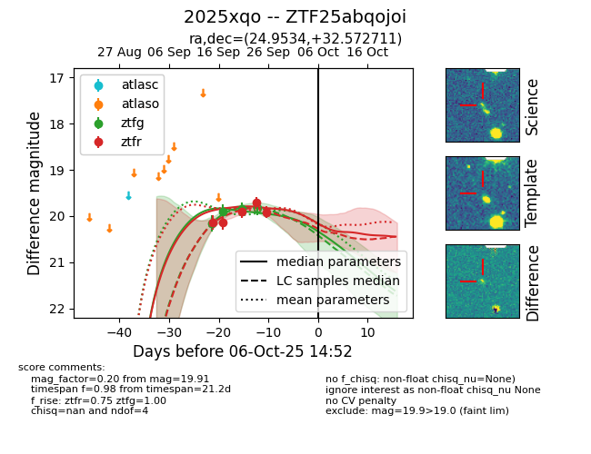
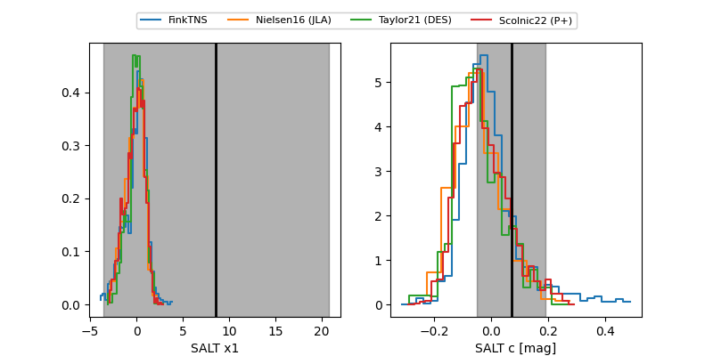

FINK: ZTF25abqojoi
Lasair: ZTF25abqojoi
ALeRCE: ZTF25abqojoi
TNS: 2025xqo
YSE: 2025xqo
ZTF25abqojoi (ztf,fink)
2025xqo (tns,yse)
equatorial (ra, dec) = (24.9534,+32.57271)
galactic (l, b) = (134.6014,-29.20049)


last ztfg=19.84, ztfr=19.91
2 ztfg, 5 ztfr detections